Painting · Digital
Hold
The Legend of Zelda, an important point of connection in my family, I use that strong imagery to show this deep bond.
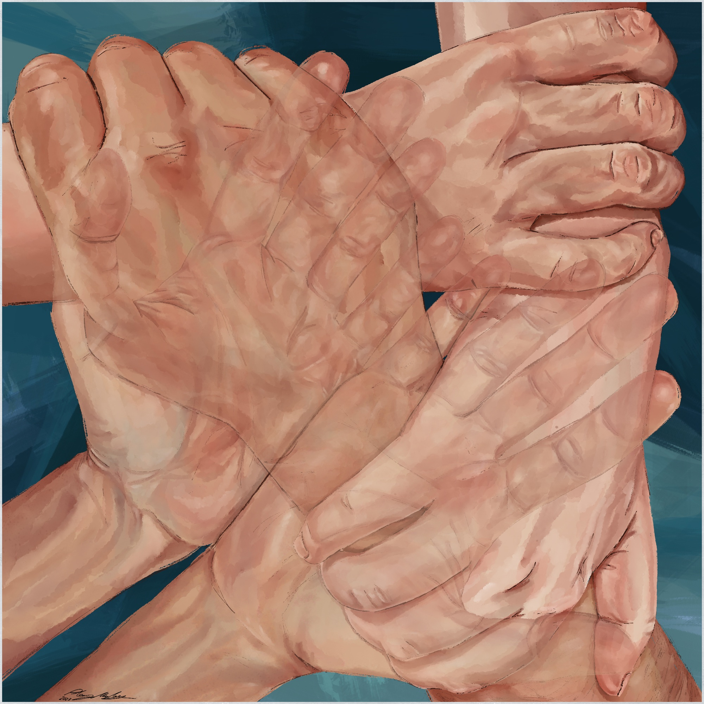
01
About the work
Video games, especially The Legend of Zelda, have played a key role in bonding with my family. The Triforce symbolizes power, courage, and wisdom—values that have been passed down to me and shape our connection. Visually and symbolically, the triangle is a strong, balanced shape, reflecting the stability and support found in these relationships.
Triangle a symbol of connection, use translucency and color to show unity and devotion to each other.
02
Sketchbook
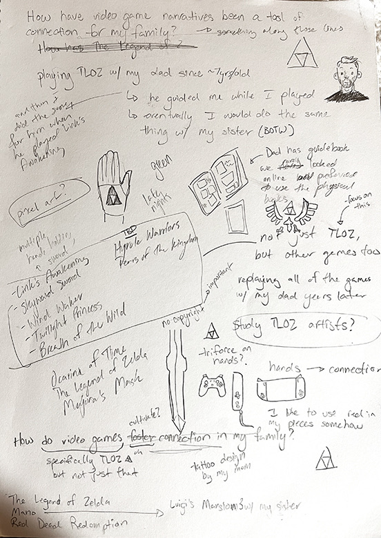
Notes 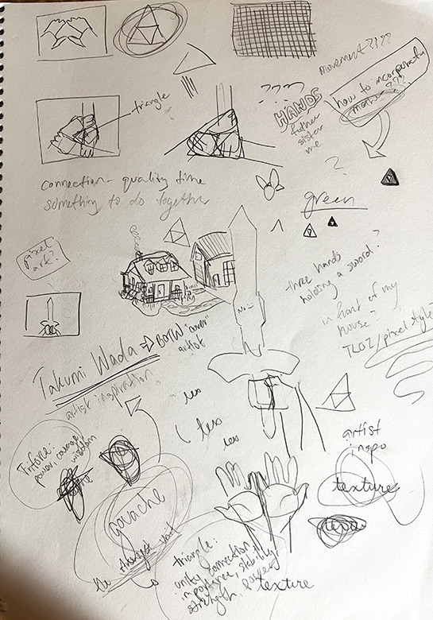
Sketches 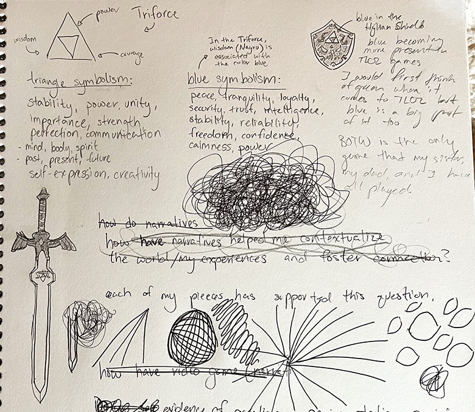
Triangle and blue symbolism
Research Triforce and triangle symbolism; create a serene feel through unified color scheme.
03
In progress
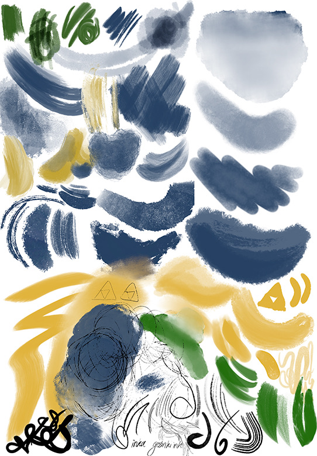
Swatches 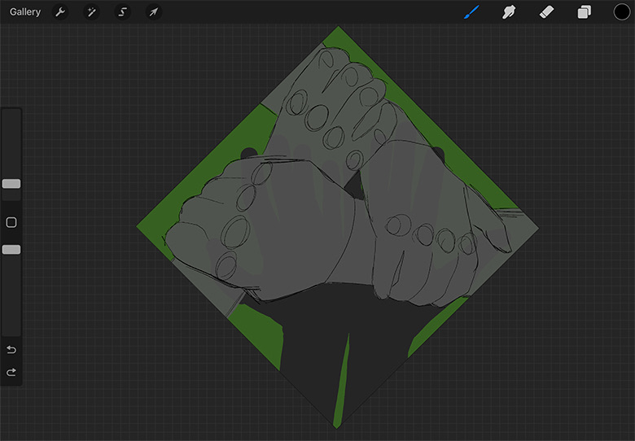
Block-in 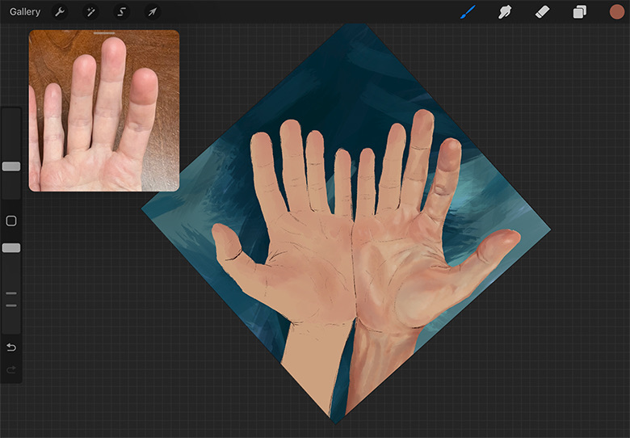
First hand 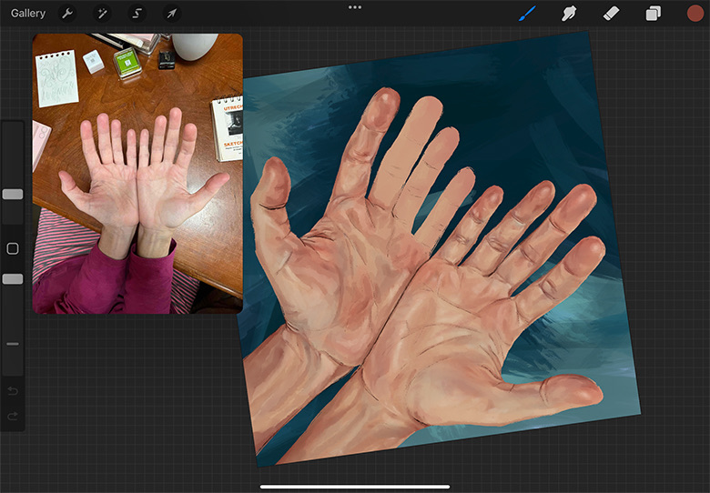
Reference 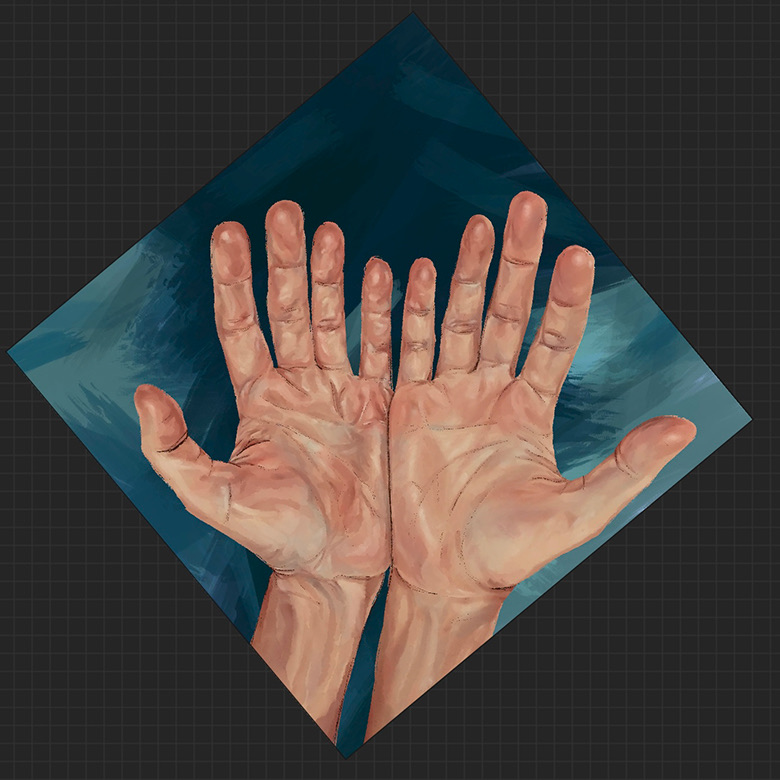
Open hands 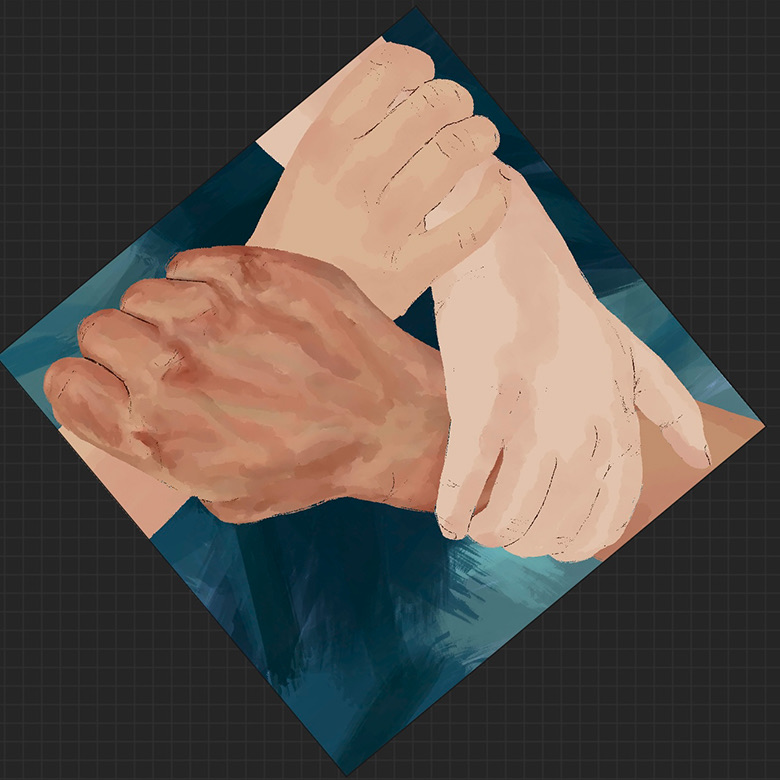
Grip
Use color blocking to create texture and movement; layer colors and strengthen triangle imagery.
04
Final
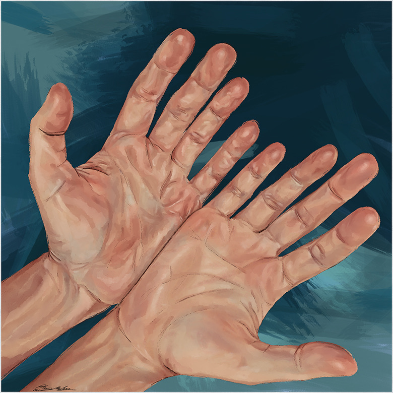
An earlier study 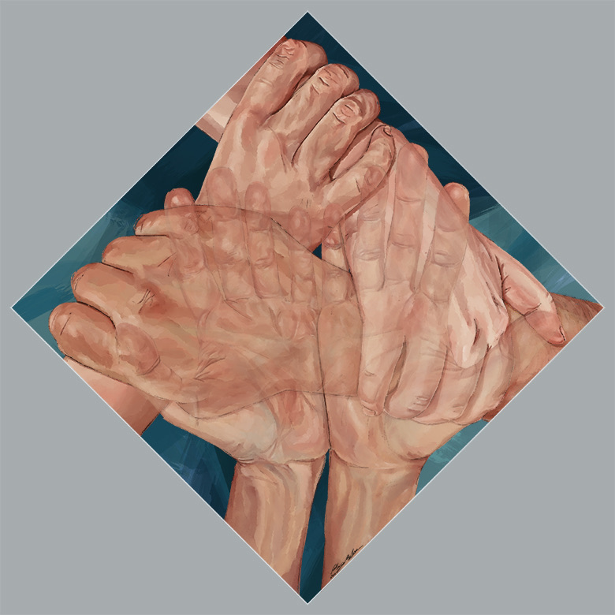
Presented as a diamond, 8 × 8 in.